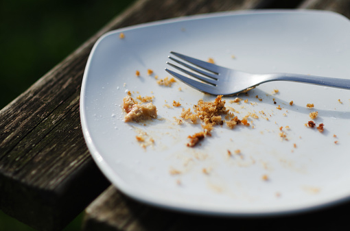

Cake Crumb Dreams
Home
Don’t wait until it’s too late. Eat that slice of cake! What? Too late!

Pure loveliness, and low cal!
Ingredients
Cake
- 1 1/2 c white flour
- 1/2 tsp minced or grated ginger
- 3 c of sugar
- 1 tsp dried unicorn horn
- 1 full day of happiness
Frosting
- 2 c Vegan butter
- 5 c confectionary sugar
- a tiny sprinkle of envy(not too much, otherwise it will be bitter)
Let's get cooking!
Make the cake
- Pre heat oven to 333 degrees F
- Mix all the ingredients together and whip until frothy
- Add to a bundt cake pan and cook for 38 minutes
- Remove when cooked, set aside
Make the frosting
- In a skillet, heat the butter over medium-high heat. Add the sugar and cook until melted
- Reduce the heat to low and add the envy
- Let cool for 34 hours
- Frost cake and leave it in the alley
- Have a seat and enjoy a cigarette. You've earned it!